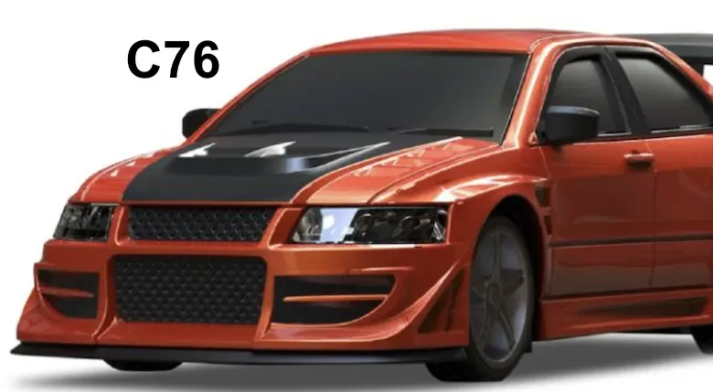
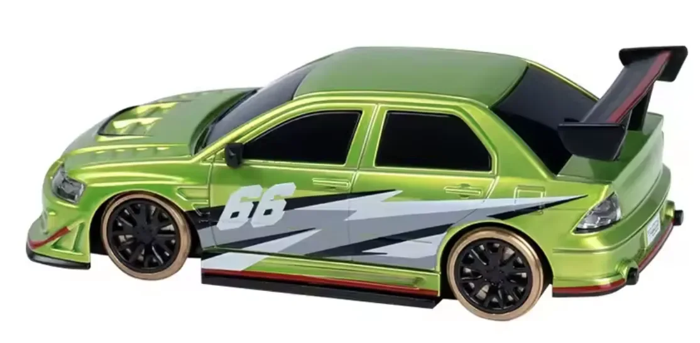
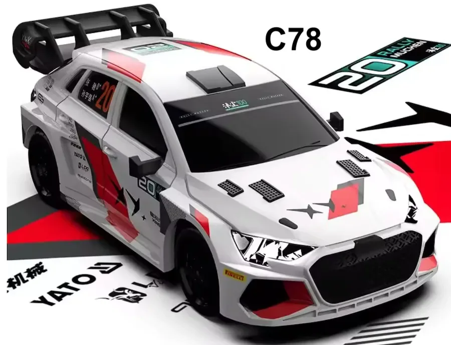

Matériel · outils 01 & 02
Choisir le bon modèle
Drift, loisir ou compétition. À ce jour, seule la marque Turbo Racing propose des modèles 1/76 assez fiables et performants pour courser sérieusement. Voici comment ils se situent les uns par rapport aux autres.
- 11 modèles comparés
- 3 générations de châssis
- De 50 à 100 €
- Référence C76
La réponse courte : prends une Turbo Racing C76 (châssis TC-06, ≈ 85 €). Les C76LE et C78 partagent la même mécanique pour 10 à 15 € de plus — la seule différence est la carrosserie. La MINI (≈ 50 €) convient pour découvrir, et la famille C61-C66 est une famille drift, à ne pas mélanger avec le racing.
Le comparateur Turbo Racing
| Aperçu | Modèle | Châssis | Usage | Prix | Notre lecture |
|---|---|---|---|---|---|
 | C76★ | TC-06 · v3 | Référence | ≈ 85 € | La meilleure : précision et vitesse au prix le plus juste. |
Quelle voiture pour moi ?
Les deux familles à ne pas confondre
Drift ou racing ?


Notre étalon
Pourquoi la C76 devient la référence
Son comportement prévisible et son niveau de performance en font une base convaincante pour opposer des pilotes à matériel comparable — et à un prix inférieur aux modèles plus récents qui partagent la même mécanique.
Les C61 à C66 restent une famille drift à part : pneus métalliques, dérive volontaire, contre-braquage. Ludique et spectaculaire, mais pas fait pour le chrono, et à ne pas mélanger avec le racing sur le même tapis.

Une fois la voiture choisie : la radio, bouton par bouton.
Comprendre la radio